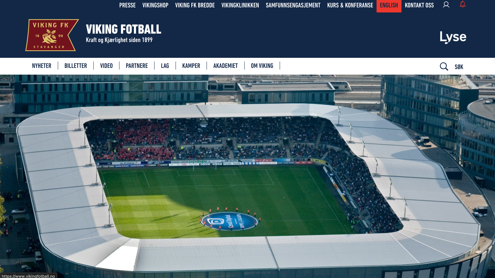

Bringing match-day energy into a clear, scannable digital experience.
01 · Overview
The Viking FK redesign started from a simple idea: football clubs deserve websites that feel as alive and emotional as a match day. Viking FK has a strong identity and loyal fans, so the homepage needed to feel bold, energetic and unmistakably football.
The aim was to bring stadium atmosphere into a digital space while still making it easy for fans to check scores, highlights, fixtures and news. This redesign focuses on strong visuals, confident typography and a clear structure that reflects how fans actually use the site.
The emotional draw of football has to be immediate. If the first thing a fan sees does not feel like Viking FK, the design has already failed.
Before / After
The redesign is easier to judge side by side. Drag the divider to compare the old homepage with the new one.

02 · Solution
I began by looking at how major football clubs present themselves online. The best ones mix emotion with fast access to important updates. Fans often visit for the same things: results, recent highlights and player information.
With that in mind, I designed the page as a long, immersive scroll that feels like a story rather than a collection of boxes. The hero section sets the tone right away with a dramatic image and large type. Below that, the Spotlight and Match Centre areas pull attention toward the content fans check most often.
Emotion comes first, information comes next, and calls to action come last. This mirrors how fans experience match day: atmosphere pulls you in and details follow naturally.


03 · Architecture
The homepage moves from hero visuals to news, then to the squad, then to the Match Centre and finally to the kit and shop section. Each part uses full-width images, bold headings and simple grids. This repetition keeps the design smooth and easy to follow.
I chose a dark theme with bright accents because it suits Viking FK's identity and creates a strong visual presence. The player roster is clean and visual so each player feels like part of the club identity. Animations are subtle and supportive: they add movement that matches the feel of the sport without distracting from the information.
Football design can be loud and dramatic, but fans still need fast access to information. The challenge was holding both at once without either giving way.


04 · Reflection
Most of the evaluation focused on clarity and speed. I looked at how quickly a fan could understand recent matches, player updates and news. The long-scroll format worked well because it kept everything connected without deep navigation.
The challenge was balancing strong visuals with readability. I refined spacing, contrast and type choices until everything felt balanced. Motion needed to feel like part of the story, so I kept it smooth and supportive. This redesign taught me how to build emotion and usability at the same time, and how small interactions can make a page feel alive while keeping clarity as the priority.
The right visual direction can make a digital experience feel closer to the real thing. That is a standard worth holding in any project, not just sports.